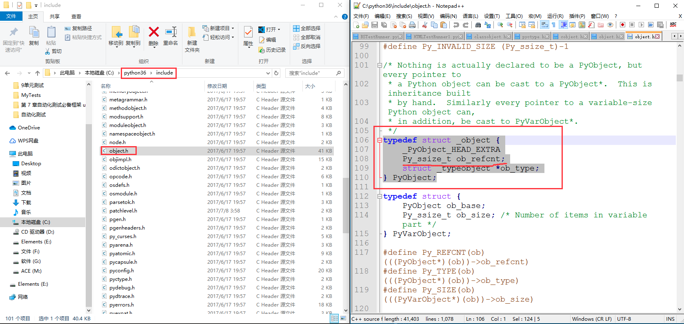

Python的垃圾回收机制是以：引用计数器为主，标记清除和分代回收为辅。
每个对象内部都维护了一个值，该值记录这此对象被引用的次数，如果次数为0，则Python垃圾回收机制会自动清除此对象。下图是Python源码中引用计数器存储的代码。

引用计数器的获取及代码示例：
import sys
# 在内存中创建一个字符串对象"Jedan"，对象引用计数器的值为：1
nick_name = 'Jedan'
# 应该输入2，实际输出2，因为getrefcount方法时把 nick_name 当做参数传递了，引发引用计数器+1，所以打印时值为：2
# 注意：getrefcount 函数执行完毕后，会自动-1，所以本质上引用计数器还是1.
print(sys.getrefcount(nick_name))
# 变量 real_name 也指向的字符串对象"Jedan"，即：引用计数器再 +1，所以值为：2
real_name = nick_name
# 应该输出2，实际输出3. 因为getrefcount方法时把 real_name 当做参数传递了，引发引用计数器+1，所以打印时值为：3
# 注意：getrefcount 函数执行完毕后，会自动-1，所以本质上引用计数器还是2.
print(sys.getrefcount(nick_name))
# 删除reald_name变量，并让其指向对象中的引用计数器-1
del real_name
# 应该输出1，实际输出2，因为getrefcount方法时把 real_name 当做参数传递了，引发引用计数器+1，所以打印时值为：2.
print(sys.getrefcount(nick_name))
# ############ getrefcount 注释信息 ############
'''
def getrefcount(p_object): # real signature unknown; restored from __doc__
"""
getrefcount(object) -> integer
Return the reference count of object. The count returned is generally
one higher than you might expect, because it includes the (temporary)
reference as an argument to getrefcount().
"""
return 0
'''通过引用计数器的方式基本上可以完成Python的垃圾回收，但它还是具有明显的缺陷，即：“循环引用” 。
#!/usr/bin/env python
# -*- coding:utf-8 -*-
import gc
import objgraph
class Foo(object):
def __init__(self):
self.data = None
# 在内存创建两个对象，即：引用计数器值都是1
obj1 = Foo()
obj2 = Foo()
# 两个对象循环引用，导致内存中对象的应用+1，即：引用计数器值都是2
obj1.data = obj2
obj2.data = obj1
# 删除变量，并将引用计数器-1。
del obj1
del obj2
# 关闭垃圾回收机制，因为python的垃圾回收机制是：引用计数器、标记清除、分代回收 配合已解决循环引用的问题，关闭他便于之后查询内存中未被释放对象。
gc.disable()
# 至此，由于循环引用导致内存中创建的obj1和obj2两个对象引用计数器不为0，无法被垃圾回收机制回收。
# 所以，内存中Foo类的对象就还显示有2个。
print(objgraph.count('Foo'))注意：gc.collect() 可以主动触发垃圾回收；
循环引用的问题会引发内存中的对象一直无法释放，从而内存逐渐增大，最终导致内存泄露。
为了解决循环引用的问题，Python又在引用计数器的基础上引入了标记清除和分代回收的机制。
so，不必再担心循环引用的问题了。
Reference cycles involving lists, tuples, instances, classes, dictionaries, and functions are found.
Python GC 源码文档：http://www.arctrix.com/nas/python/gc/
Python为了解决循环引用，针对 lists, tuples, instances, classes, dictionaries, and functions 类型，每创建一个对象都会将对象放到一个双向链表中，每个对象中都有 _ob_next 和 _ob_prev 指针，用于挂靠到链表中。
/* Nothing is actually declared to be a PyObject, but every pointer to
* a Python object can be cast to a PyObject*. This is inheritance built
* by hand. Similarly every pointer to a variable-size Python object can,
* in addition, be cast to PyVarObject*.
*/
typedef struct _object {
_PyObject_HEAD_EXTRA # 双向链表
Py_ssize_t ob_refcnt;
struct _typeobject *ob_type;
} PyObject;
typedef struct {
PyObject ob_base;
Py_ssize_t ob_size; /* Number of items in variable part */
} PyVarObject;
/* Define pointers to support a doubly-linked list of all live heap objects. */
#define _PyObject_HEAD_EXTRA \
struct _object *_ob_next; \
struct _object *_ob_prev;随着对象的创建，该双向链表上的对象会越来越多。
import gc
gc.collect()Python解释器在垃圾回收时，会遍历链表中的每个对象，如果存在循环引用，就将存在循环引用的对象的引用计数器 -1，同时Python解释器也会将计数器等于0（可回收）和不等于0（不可回收）的一分为二，把计数器等于0的所有对象进行回收，把计数器不为0的对象放到另外一个双向链表表（即：分代回收的下一代）。
关于分代回收（generations）：
The GC classifies objects into three generations depending on how many collection sweeps they have survived. New objects are placed in the youngest generation (generation 0). If an object survives a collection it is moved into the next older generation. Since generation 2 is the oldest generation, objects in that generation remain there after a collection. In order to decide when to run, the collector keeps track of the number object allocations and deallocations since the last collection. When the number of allocations minus the number of deallocations exceeds threshold0, collection starts. Initially only generation 0 is examined. If generation 0 has been examined more than threshold1 times since generation 1 has been examined, then generation 1 is examined as well. Similarly, threshold2 controls the number of collections of generation 1 before collecting generation 2.
# 默认情况下三个阈值为 (700,10,10) ，也可以主动去修改默认阈值。
import gc
gc.set_threshold(threshold0[, threshold1[, threshold2]])官方文档： https://docs.python.org/3/library/gc.html
参考文档：
http://www.wklken.me/posts/2015/09/29/python-source-gc.html
https://yq.aliyun.com/users/yqzdoezsuvujg/album?spm=a2c4e.11155435.0.0.d07467451AwRxO
Python的垃圾回收机制是以：引用计数器为主，标记清除和分代回收为辅。